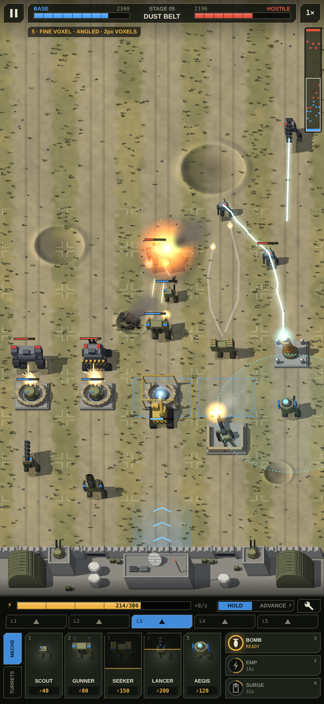
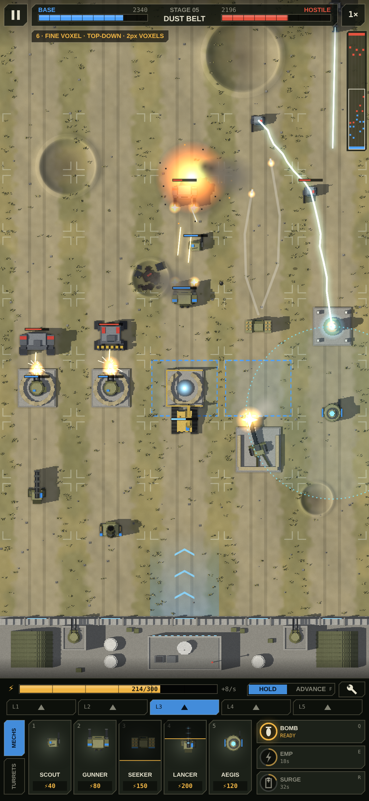
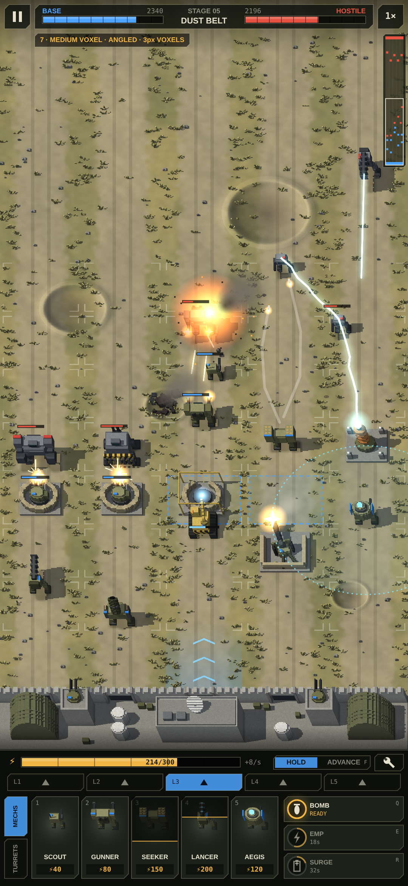
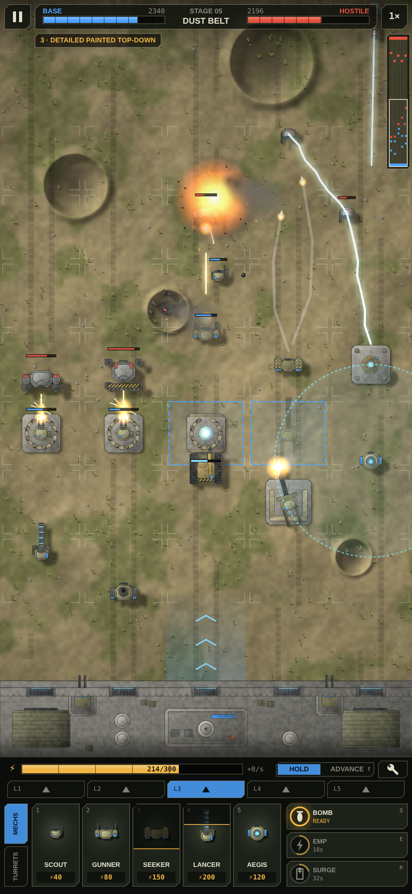

Round 2: fine-voxel samples inspired by the Ebbtide reference screenshots. The same scene in four styles. Rendered entirely in code, with no image assets.

5 · Fine voxel, angled (2 px voxels)Ray-traced voxels: exact hard shadows, occlusion, side faces visible, lanes stay vertical.

6 · Fine voxel, top-down (2 px voxels)Same scene and models, camera straight down.

7 · Medium voxel, angled (3 px voxels)Same as 5 with chunkier voxels; more "pixel" feel.

3 · Detailed painted top-down (reference)The non-voxel style you liked, for comparison.